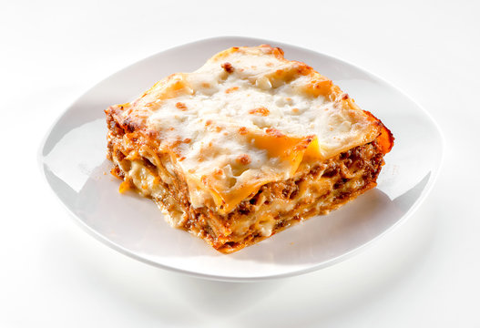

Lasagna
Easy Lasagna Recipie

I suppose since I have recipes for Skillet Lasagna, Lasagna Soup, Lasagna Roll Ups, and Taco Lasagna, we are long overdue for me to share my easy, classic lasagna recipe.
How to make it?
Ingredients
- Meat
- Onion
- Garlic
- Tomato sauce
- Cheese
- Egg
- Lasagna Noodles
Steps
- Make the meat sauce.
- Cook the noodles.
- Make the ricotta mixture.
- Layer the lasagna according to the recipe instructions.
- Cover with foil and bake
- Let the lasagna rest before serving